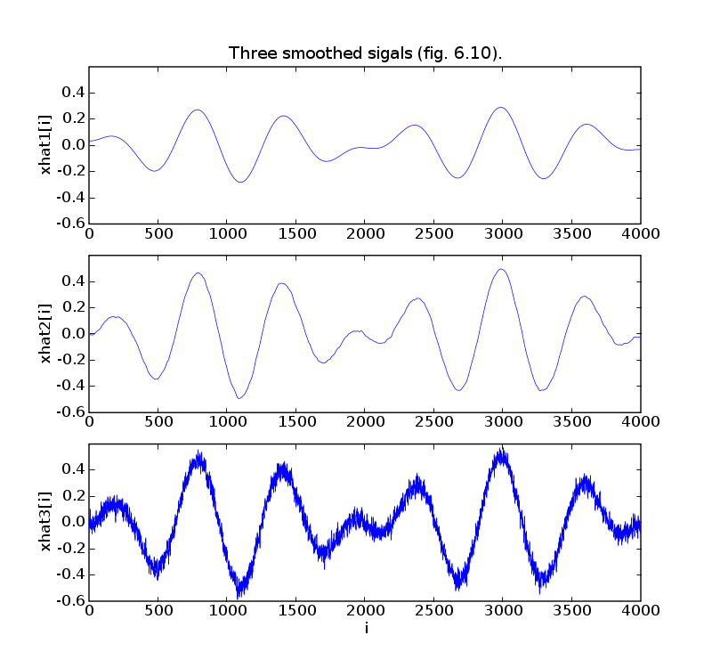
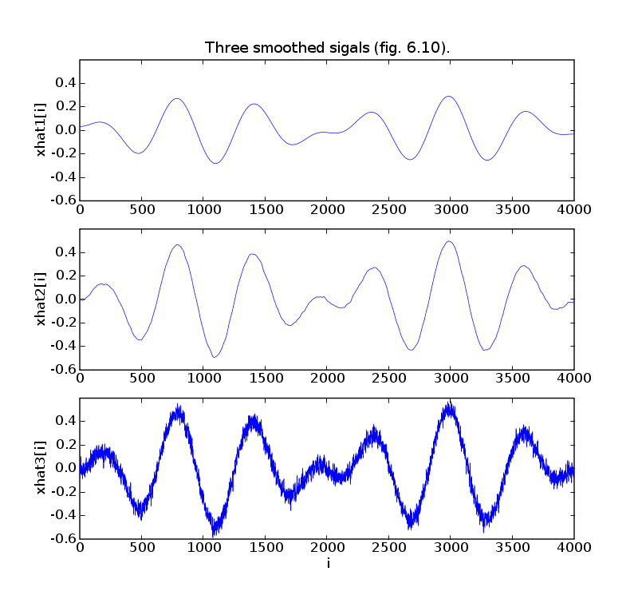

# Figures 6.8-10, pages 313-314
# Quadratic smoothing.
from math import pi
from cvxopt import blas, lapack, matrix, sin, mul, normal
try: import pylab
except ImportError: pylab_installed = False
else: pylab_installed = True
n = 4000
t = matrix(list(range(n)), tc='d')
ex = 0.5 * mul( sin(2*pi/n * t), sin(0.01 * t))
corr = ex + 0.05 * normal(n,1)
if pylab_installed:
pylab.figure(1, facecolor='w', figsize=(8,5))
pylab.subplot(211)
pylab.plot(t, ex)
pylab.ylabel('x[i]')
pylab.xlabel('i')
pylab.title('Original and corrupted signal (fig. 6.8)')
pylab.subplot(212)
pylab.plot(t, corr)
pylab.ylabel('xcor[i]')
pylab.xlabel('i')
# A = D'*D is an n by n tridiagonal matrix with -1.0 on the
# upper/lower diagonal and 1, 2, 2, ..., 2, 2, 1 on the diagonal.
Ad = matrix([1.0] + (n-2)*[2.0] + [1.0])
As = matrix(-1.0, (n-1,1))
nopts = 50
deltas = -10.0 + 20.0/(nopts-1) * matrix(list(range(nopts)))
cost1, cost2 = [], []
for delta in deltas:
xr = +corr
lapack.ptsv(1.0 + 10**delta * Ad, 10**delta *As, xr)
cost1 += [blas.nrm2(xr - corr)]
cost2 += [blas.nrm2(xr[1:] - xr[:-1])]
# Find solutions with ||xhat - xcorr || roughly equal to 8.0, 3.1, 1.0.
mv1, k1 = min(zip([abs(c - 8.0) for c in cost1], range(nopts)))
xr1 = +corr
lapack.ptsv(1.0 + 10**deltas[k1] * Ad, 10**deltas[k1] *As, xr1)
mv2, k2 = min(zip([abs(c - 3.1) for c in cost1], range(nopts)))
xr2 = +corr
lapack.ptsv(1.0 + 10**deltas[k2] * Ad, 10**deltas[k2] *As, xr2)
mv3, k3 = min(zip([abs(c - 1.0) for c in cost1], range(nopts)))
xr3 = +corr
lapack.ptsv(1.0 + 10**deltas[k3] * Ad, 10**deltas[k3] *As, xr3)
if pylab_installed:
pylab.figure(2, facecolor='w')
pylab.plot(cost1, cost2, [blas.nrm2(corr)], [0], 'bo',
[0], [blas.nrm2(corr[1:] - corr[:-1])], 'bo')
pylab.plot([cost1[k1]], [cost2[k1]], 'bo', [cost1[k2]], [cost2[k2]], 'bo',
[cost1[k3]], [cost2[k3]], 'bo')
pylab.text(cost1[k1], cost2[k1],'1')
pylab.text(cost1[k2], cost2[k2],'2')
pylab.text(cost1[k3], cost2[k3],'3')
pylab.title('Optimal trade-off curve (fig. 6.9)')
pylab.xlabel('|| xhat - xcor ||_2')
pylab.ylabel('|| D*xhat ||_2')
pylab.axis([-0.4, 20, -0.1, 5])
pylab.grid()
pylab.figure(3, facecolor='w', figsize=(8,7.5))
pylab.subplot(311)
pylab.plot(t, xr1)
pylab.axis([0, 4000, -0.6, 0.6])
pylab.ylabel('xhat1[i]')
pylab.title('Three smoothed sigals (fig. 6.10).')
pylab.subplot(312)
pylab.plot(t, xr2)
pylab.ylabel('xhat2[i]')
pylab.axis([0, 4000, -0.6, 0.6])
pylab.subplot(313)
pylab.plot(t, xr3)
pylab.axis([0, 4000, -0.6, 0.6])
pylab.ylabel('xhat3[i]')
pylab.xlabel('i')
pylab.show()
 
